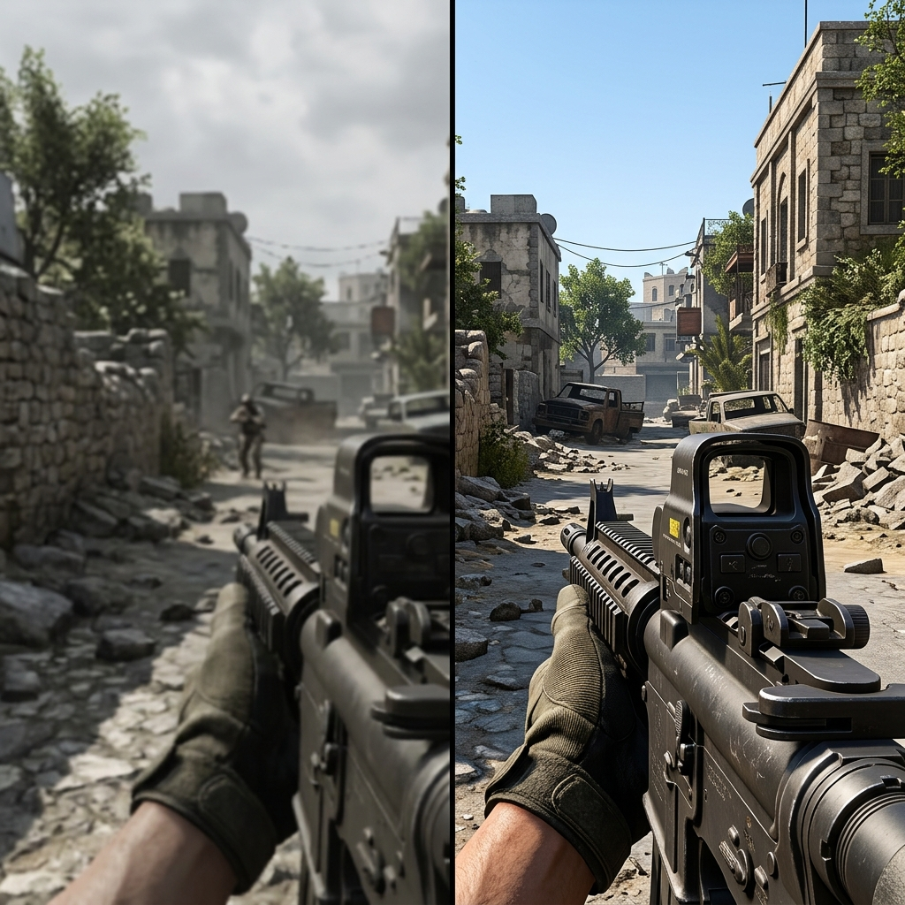

Extraia o máximo de frames, elimine os travamentos e reduza drasticamente o atraso de comandos. Uma otimização avançada, 100% manual e segura, feita por quem entende de desempenho.
Diferente de softwares de limpeza milagrosos que só pesam no seu computador, nós fazemos uma otimização cirúrgica e manual.
Sem risco de banimentos (ban) em jogos competitivos. Não utilizamos softwares ilegais ou maliciosos. Apenas configurações refinadas no sistema.
Aumente drasticamente a taxa de quadros por segundo em jogos pesados e obtenha uma fluidez perfeita em monitores de alta taxa de atualização.
Reduzimos o tempo de resposta entre o clique do seu mouse/teclado e a ação na tela. Essencial para jogos de FPS e competitivos como Valorant, CS e Fortnite.
Ajustamos configurações profundas diretamente na placa-mãe (no Plano 2) para garantir o funcionamento correto e estável do processador e memória RAM.
Veja o impacto real da nossa otimização avançada na fluidez e qualidade visual da sua gameplay.

A otimização manual reduz a latência do sistema e aumenta as taxas de FPS em até 4x mais.
Processo rápido, extremamente prático e 100% seguro. Você acompanha tudo em tempo real na sua tela.
Escolha o plano ideal para suas necessidades (Windows Sem Formatação ou BIOS + Windows + Formatação) e entre em contato conosco.
Alinhamos o melhor horário para realizar o procedimento pelo WhatsApp. Sem filas, sem complicações.
Fornecemos suporte remoto via software oficial (AnyDesk ou TeamViewer) de forma totalmente criptografada e segura. Você assiste a todo o processo.
Pronto! Seu computador estará perfeitamente otimizado. Você passa a contar com suporte prioritário via WhatsApp garantido por 30 dias.
Mais desempenho. Menos travamentos. Máxima eficiência. Escolha a melhor opção para você.
Suporte pós-serviço via WhatsApp por 30 dias. Após esse período, atendimentos adicionais terão custos sob consulta.
Suporte pós-serviço via WhatsApp por 30 dias. Após esse período, atendimentos adicionais terão custos sob consulta.
Tem dúvidas sobre o processo de otimização? Reunimos as principais perguntas dos nossos clientes aqui.
De forma alguma! Nossos ajustes são 100% manuais, feitos dentro das diretrizes oficiais do Windows e drivers homologados das fabricantes de hardware (NVIDIA, AMD, Intel). Não utilizamos cheats, exploits, scripts de terceiros ou injetores que violam os sistemas anti-cheat (como Vanguard, EAC ou BattlEye). Seu PC continuará 100% seguro.
O serviço é realizado de forma 100% transparente através do AnyDesk ou TeamViewer, softwares renomados e seguros de acesso remoto. Você recebe um código exclusivo de conexão, acompanha tudo o que fazemos em tempo real na sua tela e pode encerrar a sessão imediatamente a qualquer momento. Nenhum arquivo pessoal seu é acessado ou copiado.
Para o Plano 1 (Windows Sem Formatação), o processo dura de 45 a 90 minutos. Para o Plano 2 (BIOS + Windows + Formatação), como envolve a formatação limpa da máquina e a otimização da BIOS diretamente na inicialização física do computador, o tempo total gira em torno de 2 a 3 horas, dependendo também da velocidade de download da sua internet para baixar os drivers.
Todos os jogos se beneficiam da redução de latência e consumo de RAM, mas jogos competitivos modernos focados em CPU como Valorant, Counter-Strike 2, Fortnite, Call of Duty: Warzone, League of Legends, Apex Legends e GTA V (FiveM) apresentam o aumento de FPS mais expressivo e a estabilização de frametime (redução dos micro-travamentos chaves na gameplay).
Durante os 30 dias subsequentes à finalização da otimização, se você notar qualquer comportamento atípico, tiver dúvidas de configuração ou instalar um novo periférico e precisar de ajustes, basta nos chamar no WhatsApp. Nós conectaremos novamente e resolveremos sem custos extras. Importante: Após os 30 dias corridos, o suporte gratuito é encerrado, e qualquer atendimento, reconfiguração ou suporte técnico adicional subsequente terá um custo adicional sob consulta.
A BIOS (Basic Input/Output System) é o primeiro software que roda quando você liga o computador. Ele é responsável por gerenciar a comunicação física de todo o seu hardware. Nós otimizamos a BIOS (no Plano 2) para desbloquear os limites de energia do processador, configurar as frequências e timings de memória na velocidade correta (perfil XMP/DOCP), habilitar tecnologias de alto ganho de FPS como o Resizable BAR (Smart Access Memory) e desligar recursos de economia desnecessários que aumentam a latência e causam travamentos durante os jogos.
Muitas pessoas olham apenas a velocidade da memória RAM em MHz (ex: 3200MHz), mas o que realmente dita o quão rápido a memória responde às requisições do processador são os Timings de RAM (latências). Eles representam o número de ciclos de clock que a memória demora para ler ou escrever dados. Ao realizar o ajuste refinado dos timings principais e secundários, reduzimos o atraso na comunicação, o que resulta na eliminação dos micro-travamentos (stuttering) em jogos pesados e um aumento considerável nas taxas de 1% Low FPS, deixando a sua gameplay perfeitamente fluida.
O Overclock é a técnica de aumentar a frequência de funcionamento da CPU ou GPU acima dos padrões de fábrica para extrair o máximo de desempenho bruto do chip. O Undervolt, por outro lado, é um ajuste cirúrgico onde diminuímos a tensão elétrica aplicada ao processador/placa de vídeo, mantendo o mesmo desempenho ou até aumentando-o. Isso faz com que o hardware consuma muito menos energia e opere em temperaturas muito mais baixas (geralmente caindo de 10°C a 20°C). Com menos calor, o PC evita o thermal throttling (redução automática de clocks por superaquecimento), garantindo um desempenho consistente por horas sem risco de queima de componentes.